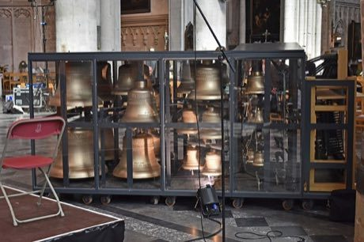
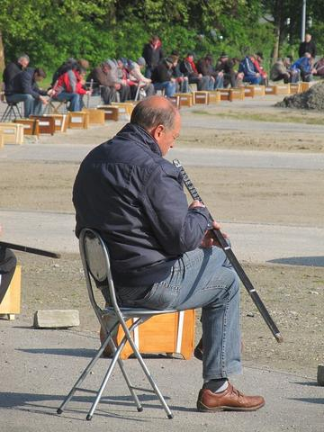

Home / Living Traditions / Celtic and Atlantic Europe
Playable heritage gameCarillon
Also known as Beiaard
A carillon is a set of at least twenty-three tuned bronze bells hung in a tower and played from one keyboard. The player strikes wooden batons with the sides of the fists and presses foot pedals for the large bells, sending melodies over the roofs of the town.


How to play
- The pedals for the large bells are in the first row and the batons for the smaller bells in the second, shortest bell on the right.
- Notes travel toward a line at the bottom; strike the bar just as its note arrives.
- Begin with the rising and falling peal, then play the tower tune with its pedal bass.
- End with the peal where the pedals answer the batons.
Rules at a glance
- Eight batons give a diatonic scale from a lower to a higher bell; three pedals sound the large bells below.
- A stroke within a hair of the note is perfect, a near one is good, and a missed one scores nothing.
- An extra stroke while a song is running costs a few points.
- Each song plays twice; three stars need roughly nine notes in ten on time.
- Bells ring on after the stroke, so the tune is spaced to let each note fade.
About the tradition
The carillon grew in the towns of the Low Countries, where bells marked the hours and played short tunes across market squares. Belgium and the Netherlands still have schools for carillonneurs and hold summer concerts from towers.
Origins
A living tradition passed from person to person; it is not tied to a single dated origin. It belongs to the cultural world of Celtic and Atlantic Europe.
Credits
- Tradition: carillon playing of Belgium and the Netherlands; tunes written for this game
- Photo of a carillon from Wikimedia Commons (CC BY-SA 4.0)
- Photo: Ymblanter, CC BY-SA 4.0, source on Wikimedia Commons
- Text: CC BY-SA 4.0, World Heritage Games.
Sources

Get the app
Carillon is one of 10 drums and rhythms in the Drum Music of the World app for iPhone, iPad and Android. Live on Google Play. Submitted to the App Store; in review, and the store link appears here the day it goes live. One app, many traditions, no account needed.
More games to play


More from Belgium

Bobbin lace making
Belgium · Crafts and making
Finch sitting
Belgium · Other traditions
Korfball
Netherlands +2 · Team ball sports
Krulbol
Belgium +1 · Dexterity and skill games
Krulbollen
Belgium · Street and playground games
Racing Pigeon Loft
Belgium +2 · Board and table games